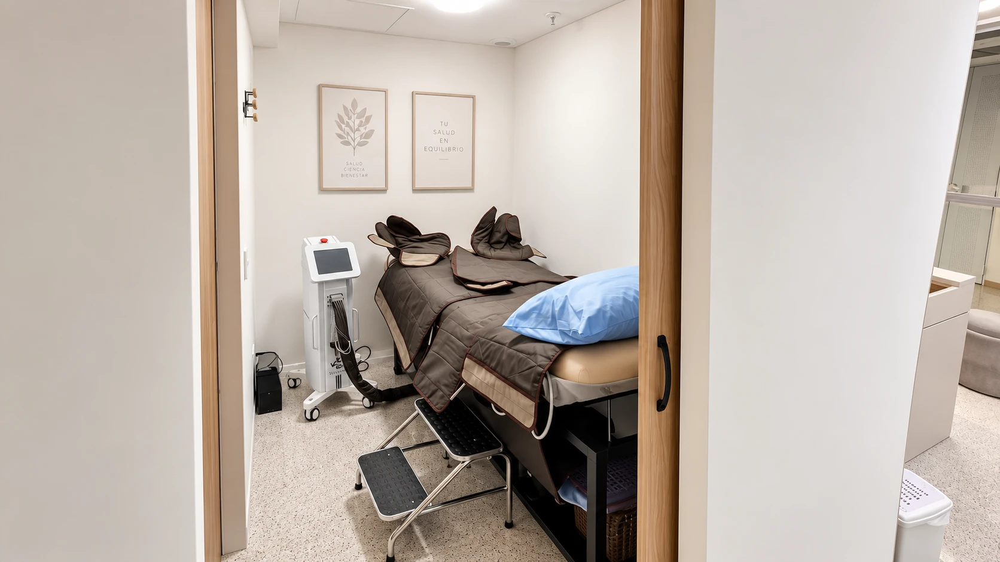

Médico internista con subespecialidad en medicina vascular. Atiende lipedema, várices e insuficiencia venosa en Seravena, El Poblado, Medellín.
Conócelo ↓Quién es
El Dr. José David Puerta Rojas es médico internista con subespecialidad en medicina vascular. Se enfoca en el diagnóstico y el manejo integral de las enfermedades venosas, arteriales y linfáticas, y del lipedema, y apoya sus valoraciones en el eco doppler. Atiende en Seravena, en la Torre Médica Salud Vegas, en El Poblado, Medellín.
En Seravena es quien te recibe en la valoración: escucha tu historia, te examina y, con el diagnóstico claro, arma el plan junto al resto del equipo. Nutrición, deporte, psicología y acompañamiento clínico trabajan coordinados con él, para que no te manden de un lado a otro.
Muchas pacientes llegan después de años de escuchar que lo suyo era solo sobrepeso. Por eso en su consulta el punto de partida es un diagnóstico bien hecho, y no un paquete de tratamiento.
Conoce la clínica de lipedema en Medellín →Qué trata
Valoración clínica y manejo conservador y multidisciplinario, para controlar el dolor, la pesadez y la hinchazón, y frenar el avance.
Sobre el lipedema →Diagnóstico con eco doppler y tratamientos mínimamente invasivos y ambulatorios, como la escleroterapia, según lo que muestre el examen.
Sobre las várices →Piernas pesadas, hinchadas o con calambres: se estudia cómo circula la sangre y en qué venas está el problema antes de decidir el tratamiento.
Sobre la insuficiencia venosa →
Cómo trabaja
En corto
Es médico internista con subespecialidad en medicina vascular. Se enfoca en el diagnóstico y el manejo integral de las enfermedades venosas, arteriales y linfáticas, y del lipedema, y apoya sus valoraciones en el eco doppler. Atiende en Seravena, en la Torre Médica Salud Vegas, consultorio 1316, en El Poblado, Medellín.
Es médico internista con subespecialidad en medicina vascular. En Doctoralia aparece como médico vascular e internista.
En Seravena: Calle 2 Sur #46-159, Torre Médica Salud Vegas, consultorio 1316, El Poblado, Medellín, Antioquia.
Sí. En Seravena valora a las pacientes con sospecha de lipedema con historia clínica, examen físico y eco doppler para descartar otras causas de hinchazón, y coordina un manejo conservador y multidisciplinario con nutrición, deporte, compresión y psicología.
No. La atención en Seravena es particular: no hay convenio con EPS. No necesitas remisión para pedir tu cita.
Escríbele a Seravena por WhatsApp al +57 305 208 8204 o completa el formulario de la página de contacto. La valoración es presencial en El Poblado, Medellín.

Da el primer paso
¿Ya te atendió? Tu opinión en Google o en Doctoralia ayuda a otras pacientes a encontrarlo.